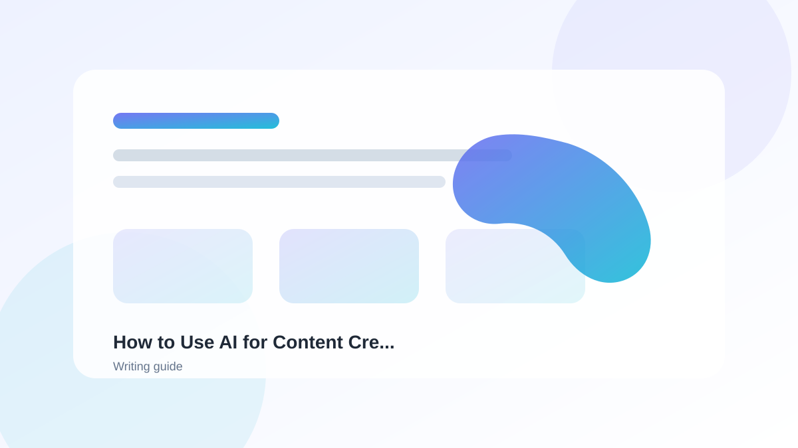

Introduction
AI writing tools have revolutionized content creation. Whether you're writing blog posts, emails, social media content, or essays, AI can help you write faster and better. In this guide, we'll explore the best AI writing tools available.
How AI Writing Tools Work
AI writing tools use natural language processing (NLP) to understand and generate human-like text. They can:
- Generate content from prompts
- Improve existing writing
- Summarize text
- Paraphrase content
- Generate ideas and outlines
Top AI Writing Tools
1. ChatGPT
ChatGPT is the most versatile AI writing tool. It can handle any writing task, from blog posts to technical documentation.
2. Jasper
Jasper is designed specifically for marketing content. It excels at creating ad copy, social media posts, and SEO content.
3. Copy.ai
Copy.ai focuses on copywriting for businesses, including ads, product descriptions, and email sequences.
4. QuillBot
QuillBot is great for paraphrasing and summarizing. It's popular among students and content writers.
5. GrammarlyGO
GrammarlyGO adds AI writing assistance to Grammarly's already powerful grammar checker.
Use Cases
AI writing tools are useful for:
- Bloggers: Generate blog post ideas and drafts
- Marketers: Create ad copy and social media content
- Professionals: Write emails and reports faster
- Students: Brainstorm topics, outline assignments, and revise their own work
How to Choose the Right Tool
Consider these factors when choosing an AI writing tool:
- Use case: What type of content do you need to write?
- Features: Does it have the features you need?
- Price: Is it within your budget?
- Quality: How good is the output?
Example Workflow
Here's how to use AI for blog post writing:
- Use ChatGPT to generate blog post ideas
- Create an outline with Jasper
- Write the first draft using ChatGPT
- Edit and improve with GrammarlyGO
- Paraphrase sections with QuillBot if needed
Advertisement Space
FAQ
Can AI write original content?
Yes, AI can generate original content, but it's important to edit and add your unique voice. The best results come from combining AI generation with human editing.
Is AI writing plagiarism?
AI can help you draft and edit, but you should always check for accidental similarities, cite sources when needed, and review the final work yourself.
Which tool is best for beginners?
ChatGPT is the best all-around tool for beginners due to its versatility and free tier. GrammarlyGO is also great if you want AI assistance integrated with grammar checking.
Can AI help with SEO writing?
Yes! Tools like Jasper and Copy.ai have built-in SEO features to help you create content that ranks well in search engines.
How do I maintain my writing style when using AI?
Provide the AI with examples of your writing style, use style prompts, and always edit the output to match your voice.
Advertisement Space
Conclusion
AI writing tools are powerful assistants that can significantly boost your writing productivity. By choosing the right tool for your needs and learning to use it effectively, you can create high-quality content faster than ever before. Remember that AI is a tool - your unique voice and expertise are what make your content truly valuable.
Related Guides

Best Free AI Tools for Beginners
Start your AI journey with these powerful free tools.
Read Guide ->
AI Writing Tools
Explore all our writing tool recommendations.
Read Guide ->
How to Use AI for Content Creation
Master AI-assisted content creation.
Read Guide ->